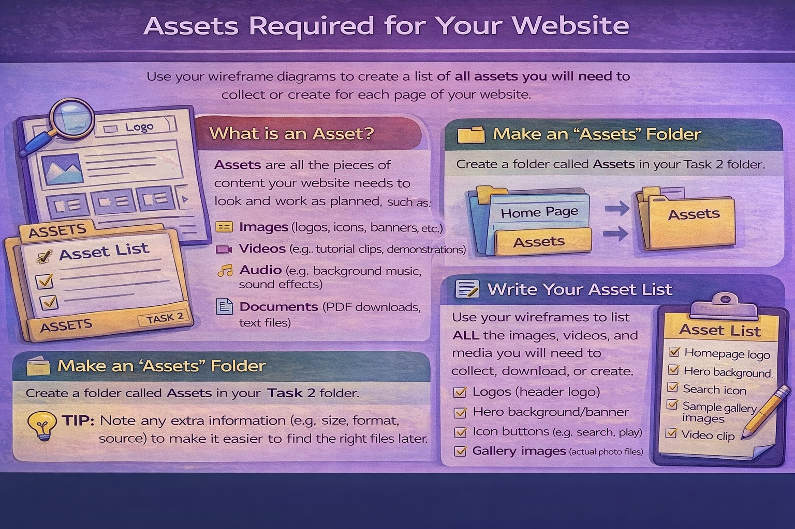

Task 1C(i) Assets required
Identify assets you need, where they come from, and why you need them.
Assets to identify
In this section you must identify all the assets you will need to build your IDMP (website). Use your wireframe diagrams to spot every image, icon, video, audio file, and download that will appear on each page.
What is an asset?
An asset is any file or piece of content your website needs to look and work as planned. Assets can be:
- Images: logos, icons, banners, photos, background images
- Video: clips, interviews, embedded video thumbnails
- Audio: sound effects, music clips, narration
- Downloads/Documents: PDFs, templates, information sheets
- Text content: page copy, captions, quiz questions, labels (if written in separate files)
Make an “Assets” folder (for Task 2)
You should create a folder called Assets inside your Task 2 folder. This is where you will store everything you collect or create ready for building your website.
Tip: Keep your files organised now to save time later. Use clear names like logo.png, hero-banner.jpg, gallery-01.jpg, quiz-icon.svg.
Create an asset list (your evidence)
Your evidence should be an asset list showing everything you need to collect, download, or create. This list should come directly from your wireframes.
- List assets page-by-page (Home, About, Gallery, Quiz, etc.)
- Include the asset name and what it will be used for
- State where it will come from: created by you or sourced (with credit)
- Add notes about format or size if helpful (e.g. “hero banner, JPG, wide”)
Example assets you might list
- Header logo (created by me)
- Hero background image/banner (sourced/created)
- Icons for buttons (SVG/PNG)
- Gallery images with captions
- Embedded video thumbnail / screenshot
- Audio clip (if used)
- PDF download (template or information sheet)
Remember: If it appears on your wireframes, it should appear on your asset list.